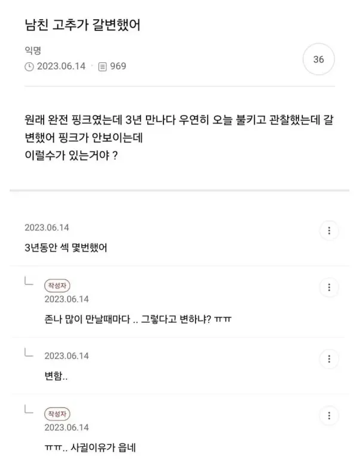

...?

...?
불고기가 고추갈변한거보고 상했다한거야?
고추 레이저로 핑크 만들어주는 병원 있음
고추 박피여?!? 😨
으악!
틴트발라
언냐가 깜보여서 물들었나 ㅠ
핑두에 환상있는 찐따남이 쓴 망상글
핑크귀두 예쁘지
근데 글쓴이가 여자라는 사실은 어디에도 없다
그런데 ... 남친의 쥬지가 갈변할 정도면 자신도 더이상 빙크뷰지가 아닐꺼 같은데 ...
나도핑크쥬지였는데 좀 꺼매짐ㅜㅜ
핑보에서 갈보된거면 존나 험악해보일듯
백인도 아니고 남자한테 핑크ㅈㅈ가 있을수 있음? 태어나서 목욕탕이든 수영장이든 헬스장이든 한번도 본 적 없는데. 애초에 초중딩때부터 딸치는데 멀쩡할리가?ㅋㅋㅋㅋㅋㅋㅋ
하얀 남자애들 있지않나
니꺼도 갈변 했을걸?
갈잦ㅋㅋㅋㅋㅋ